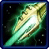

- Stats
- Abilities/Upgrades
- Strategy
- Lore
- Related
Armor: 0 |
 0/0 0 per second
0/0 0 per secondDamage: Stage 1, 6 (10 vs armored) |
Stage 2, 8 (16 vs armored) |
All stages, +20% vs massive
Attacks: 1
Cooldown: 0.6
Targets: Ground and Air
Attack Range: 6
Acceleration: 2
Collision Radius: 1
Requirements: Levels 2-3 requires Fleet Beacon
| Level |  Level 1 Level 1 |  Level 2 |  Level 3 Level 3 |
| Minerals |  150 150 | 225 | 300 |
| Vespene Gas |  150 150 | 225 | 300 |
| Time |  160 160 | 190 | 220 |
| Damage Bonus | +1 (+1) | +2 (+2) | +3 (+3) |
| Total Damage | 7 (11) | 9 (17) | 8 (12) | 10 (18) | 9 (13) | 11 (19) |
250Vespene Cost:
150Supply:
 3
3Produced From: Stargate Build Time:
60Requirements: Stargate
Unit Type: Armored, Mechanical, Air
Requirements: Levels 2-3 requires Fleet Beacon
| Level |  Level 1 Level 1 |  Level 2 Level 2 |  Level 3 Level 3 |
| Minerals | 150 | 225 | 300 |
| Vespene Gas | 150 | 225 | 300 |
| Time | 160 | 190 | 220 |
| Armor Bonus | +1 | +2 | +3 |
| Total Armor | 1 | 2 | 3 |
Requirements: Levels 2-3 requires Twilight Council
| Level |  Level 1 Level 1 |  Level 2 Level 2 |  Level 3 Level 3 |
| Minerals | 150 | 225 | 300 |
| Vespene Gas | 150 | 225 | 300 |
| Time | 160 | 190 | 220 |
| Armor Bonus | +1 | +2 | +3 |
| Total Armor | 1 | 2 | 3 |
| Icon | Minerals | Vespene Gas | Research Time | Researched At |
| 0 | 0 | 0 | Already Researched |
Information: A special attribute to the Void Ray is the fact that it can charge up its weapon while attacking. It has to concentrate on a single unit to charge up, and takes 7.2 seconds to fully charge.
The Void Ray used to have 3 stages of increasing damage, but this was changed in beta patch 13 (version 0.15.0.15449) to only have two stages of damage. They kept the visual effect of 3 stages of charging though.
| Icon | Minerals | Vespene Gas | Research Time | Researched At |
| 150 | 150 | 80 | Fleet Beacon |
Information: Increases the Void Ray's movement speed by 0.703 and its acceleration by 0.6875.
As of patch 1.1.2 Flux Vanes speed upgrade bonus was decreased from 1.125 to 0.703
As of patch 1.2.0 Flux Vanes upgrade was removed.
If you have any suggestions for more strategies, go ahead and post on the forums 'here'!
Shift Queue Blinking
Sometimes when you have a large amount of stalkers, blinking can become more difficult and not all stalkers will end up where intended. A way to help this is to queue up a move command (to have the stalkers in range to blink), then the blink, and then another move command (to move the stalkers in front out of the way).
+1 Weapons vs Zerglings
Sum text about how gosu this is
+1 Weapons vs Zerglings
Sum text about how gosu this is
- Overview
In use by 2502, the void ray is a Dark Templar protoss escort ship; the result of combining Nerazim and Khalai technologies. It is built around a prismatic core, which serves as a virtually eternal power source. The core derives its energy from both the Void and psionic matrix, forming a self-sustaining reaction. Normally the core is kept in check by an arrangement of flux field projectors.
When the void ray has locked onto a target and deployed these projectors however, it can shoot searing beams of energy that grow exponentially more powerful over time. Even heavily armored structures and warships have been incinerated by the void ray, leading some terrans to believe that it will eventually replace the carrier as the flagship of the Great Fleet.
Source Information
Text information from the Starcraft Wiki.
Photo 1 created by Saejin Oh. Copyright: UDON Entertainment.
Photo 2 created by Samwise Didier. Copyright: Blizzard Entertainment.
| Protoss |
| Units |
| Nexus | Probe | Mothership |